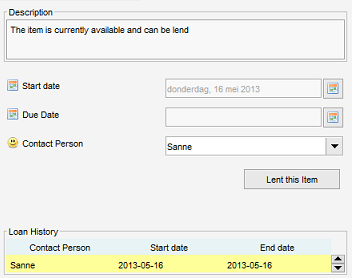

Loan administration
Right-click in item view > Select Loan Administration

Loans can be administered via the right-click menu on pressing "Loan Administration" or via the "Loan" tab of the item form. A history of loans is maintained.
You can get an overview of your loans by using the "Loan Information" utility from the "Administration" menu. The contact person form also contains a separate tab showing his lend items.
If an item has been lend and is overdue (the contact person did not return the item in time) a warning message is displayed on startup.
Persons
For the loan administration to work, you need to register contacts in the contacts module. The registration of contacts works just the same as the registration of items in the other modules
Lending an item
Specify the person to which the item will be lend and specify the date on which the loan starts. If the loan start date is today (or in the past) the item will be marked as unavailable. The item cannot be lend to anyone else until the item has been returned. Note that there are 3 fields available which tell you more about the loan status, "Available", "Loaned By" and "Days Loaned". These can be added by using the "field settings" more about this
Returning an item
Items borrowed by a person can be registered as "returned". Press "Return Item". By default the item's return date is today. You can enter a different date in the "end date" field before pressing the "Return Item" button.
Filtering
As stated before there are three fields available which tell something about the loan status, "Available", "Loaned By" and "Days Loaned". These fields can be used to create a filter (more about this). Using filters you can easily keep track on your loans.
Loan overview: Loan Information
Menu path: Administration > Loan Information
The loan information gives an overview of currently lend items.

- Item what kind of item are we talking about (software, audio CD, etc).
- Label description of the item.
- Due Date when should the item be returned? Displayed in red in case overdue.
- Days till overdue How many days are left before which the item should be returned?
Double clicking on an item opens the item form from where the loan information can be maintained.